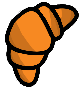
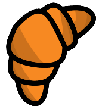

Game Dev
Moje projekty z CTF.
Moje Projekty:
Opis i prezentacja gier, które zrobiłem w Fusion.
Shibeball
Shibeball jest drugą grą, którą kiedykolwiek zrobiłem, oraz pierwszą, która była nie prototypem,
a w pełni działającą grą zawierającą wszystkie elementy, które chciałem w niej zamieścić.
Polega na unikaniu piłek, i zbieraniu bonusów pomagających w przetrwaniu. Każda przeżyta sekunda równa się
jednemu punktowi, a za punkty można odblokowywać nowe wyglądy dla piłek i nowe mapy.

Shroob [& HD Remix]
Shroob jest grą wydaną przeze mnie jako żart pod tytułem "Chas Crystal", który był długo zapowiadaną
grą nad którą pracowałem. Shroob miał celowo wyglądać źle, niestarannie, i sprawiać wrażenie, że był
zrobiony w 1 dzień (zgodnie z prawdą). Ku mojemu zdziwieniu, ludzie pokochali Shroob'a, i zaczęli
robić Speedrun z tej gry. Niektórzy nawet rysowali fan-arty. Widząc popularność Shrooba, postanowiłem stworzyć
"HD remix", który był identyczny w rozgrywce, ale miał przyjemniejsze sterowanie, i licznik czasu zawarty w grze.

Czas to Pieniądz
Czas to Pieniądz jest tworem pierwszego game jamu, w którym brałem udział. Gamejam powstał w akcji
"Grarantanna - Zostań w domu" około środka Marca. Wraz z jednym znajomym postanowiłem podołać wyzwaniu
i stworzyć pełną grę na konkurs w ciągu 5 dni. Tematem tego Jamu były "Przysłowia". Po około 2 godzinach
rozrysowywania projektów udało się wpaść na grę, której rozgrywka całkowicie się opiera na przysłowiu
"Czas to Pieniądz." Gra polega na zdobywaniu skrzynek pojawiających się losowo na mapie, i sprzedawania
ich zawartości odpowiednim kupcom, by zyskać więcej czasu gry. Gdy zegar wyniesie 0, przegrywasz,
a ilość Twoich punktów to Twój rekord.

Battle Rogale
Stworzona z dosyć dziwną motywacją gra Battle Royale, której tworzenie zajęło mi blisko miesiąc.
Battle Rogale wystartowało na początku jako projekt do zrobienia w 3 dni. Miała z niej powstać mała gra PvP,
w której walczy paru graczy dopóki nie zostanie ostatni. Projekt był mały, ale wyzwania ambitne.
Jako, że gra miała być online, musiałem stworzyć system multiplayer, który działałby nie tylko lokalnie.
To, oraz chęć dodania coraz to większej ilości systemów, by gra była ciekawa bardzo wydłużyło czas jej tworzenia.
Battle Rogale robiłem całkowicie sam, i z tego powodu jestem tym bardziej dumny, że gra wyszła działająca,
ciekawa, bez błędów i bardzo dopracowana. Jest to jedyna z moich gier, których nie upubliczniłem poza DevLogiem,
ale to jest tylko dlatego, bo nie chcę przeciążyć serwerów publicznych. Zrobiłem dla celów tej gry także konsolę
hostującą serwery, ale dla użytkownika nieznającego się na przekierowywaniu portów będzie działała tylko lokalnie.
Dalej pracuję nad hostowaniem 24-godzinowego serwera i opublikowaniem gry.